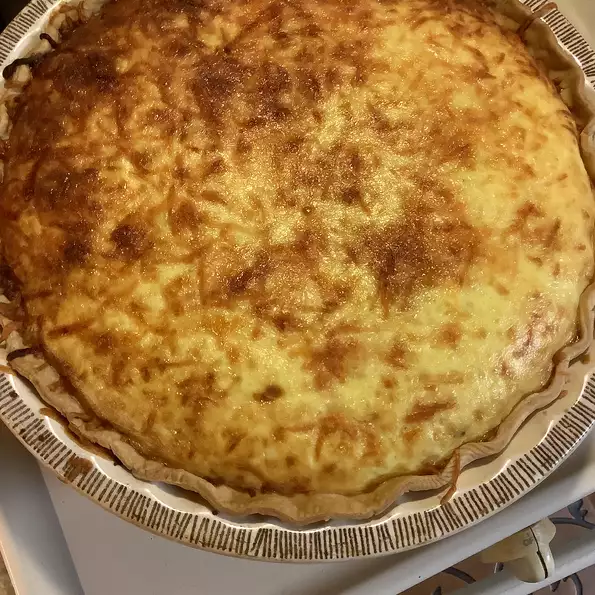

SpinachQuiche

Steps for preparing a delicious SpinachQuiche
Another husband-approved recipe. Made a couple times
recently because of how easy it is to make! This recipe is
easy to double or triple,
but you may have to cook a bit longer if doing so.
Ingridients
- 1 cup shredded Cheddar cheese
- 6 eggs, whisked
- 6 slices bacon, diced
- 2 slices bread, cubed
- ⅓ red bell pepper, diced
- 2 green onions, chopped
- 3 tablespoons milk
- ½ teaspoon minced garlic, or to taste